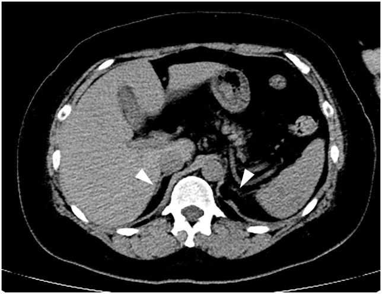
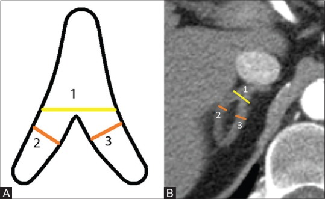
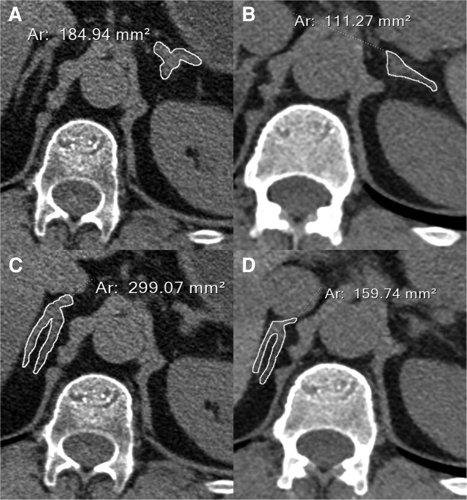

1694 — Cushing do glucocorticoid ngoại sinh: thượng thận hai bên teo, cai thuốc và suy thượng thận cấp / Iatrogenic (exogenous) Cushing syndrome
Tags: pattern:teo-thuong-than pattern:cushing pattern:suy-thuong-than vung:thuong-than vung:o-bung protocol:CT-bung protocol:DXA score:cortisol-sang score:ACTH-stimulation incidentaloma:u-thuong-than
Mức chắc chắn (certainty): tổng hợp y văn (literature synthesis) — hướng dẫn chung ESE/Endocrine Society 2024 về suy thượng thận do glucocorticoid (Beuschlein F và cộng sự, J Clin Endocrinol Metab 2024, PMC11180513) + ngưỡng kích thước thượng thận bình thường trên CT (John R và cộng sự, Indian J Radiol Imaging 2018, PMC6319091) + 2 ca nguyên văn có ảnh (Cushing + suy thượng thận do corticoid bôi ngoài da, Iwamoto Y và cộng sự, Endocr J 2025, PMC12702672; teo thượng thận do ức chế tổng hợp cortisol kéo dài, Sofer Y và cộng sự, JCEM Case Rep 2026, PMC13392468).
Câu chốt: Cushing ngoại sinh là thể Cushing phổ biến nhất, và trên hình ảnh nó ngược hoàn toàn với Cushing nội sinh: hai thượng thận teo đều, không có khối, ACTH bị ức chế. Nghĩa là "không thấy u" chính là dấu hiệu, không phải "bình thường". Cái chết không đến từ cortisol cao mà từ cai thuốc sai: trục HPA bị ức chế mất nhiều tháng tới nhiều năm để hồi phục, và 13,75% bệnh nhân suy thượng thận do glucocorticoid nhập viện có cơn suy thượng thận cấp, với tử vong 62,75% so với 44,06% ở nhóm không có cơn.
1. Tổng quan bệnh học – cơ chế hình ảnh
- Dịch tễ: glucocorticoid là nguyên nhân thường gặp nhất của hội chứng Cushing nói chung (thuốc dùng ở mọi chuyên khoa: hô hấp, da liễu, mắt, khớp, tiêu hóa). Suy thượng thận do glucocorticoid (glucocorticoid-induced adrenal insufficiency — GIAI) sau corticoid hít: 7,8% (CI 4,2–13,9), tăng theo thời gian — dùng > 12 tháng: 27,4% (17,7–39,8), liều cao: 21,5% (12,0–35,5) (ESE/ES 2024, Bảng 6). Đường bôi ngoài da cũng đủ gây Cushing + suy thượng thận khi diện rộng, da tổn thương, hoặc dùng clobetasol tới 50 g/ngày (ca PMC12702672).
- TẠI SAO thượng thận teo — cơ chế nội tiết: cortisol ngoại sinh liều trên sinh lý ức chế ngược CRH và ACTH → zona fasciculata và zona reticularis teo vì không còn ACTH kích thích; zona glomerulosa tương đối được bảo tồn (phụ thuộc renin–angiotensin) nên aldosterone thường còn, giải thích vì sao bệnh nhân không tăng kali cho tới khi có cơn suy thượng thận nặng. Hệ quả trên CT: hai thượng thận nhỏ đều, mất hình "chữ V/Y" mập, không nốt, không vôi hóa.
- TẠI SAO "không có khối" lại là chốt: Cushing nội sinh phụ thuộc ACTH (bệnh Cushing do u tuyến yên, ACTH lạc chỗ) → ACTH cao → tăng sản thượng thận hai bên đều; Cushing nội sinh không phụ thuộc ACTH (adenoma, ACC, PPNAD/AIMAH) → một khối hoặc hai bên nhiều nốt, còn bên đối diện teo vì ACTH bị ức chế. Vì vậy bộ ba kích thước + đối xứng + ACTH phân loại được gần hết các thể.
- Ngưỡng kích thước bình thường (đo trên CT lát ≤ 2,5 mm, vuông góc trục dài, cửa sổ mô mềm WL 40–60/WW 400, n = 586 người trưởng thành): thân 7,2 ± 1,8 mm (phải) và 8,8 ± 1,9 mm (trái); nhánh trong 4,1 ± 1,1 / 4,7 ± 1,1 mm; nhánh ngoài 4,3 ± 1,1 / 4,9 ± 1,3 mm; tổng độ dày thân + hai nhánh 15,6 ± 3,7 mm (phải) và 18,4 ± 3,8 mm (trái); 27% người bình thường có thân ≥ 10 mm (PMC6319091).
- Ngưỡng "teo" (suy luận từ phân bố trên — ghi rõ là suy luận): nhánh ≤ 2–3 mm và thân < 5 mm nằm dưới 2 SD của người bình thường; đáng tin hơn là so chuỗi ảnh theo thời gian — ca PMC13392468: diện tích thượng thận trái 184,9 → 111,3 mm², phải 299,1 → 159,7 mm² sau nhiều năm ức chế trục.
- TẠI SAO nguy hiểm khi cai: nửa đời sinh học của dexamethasone 36–72 giờ (so với prednisone 12–36 giờ và hydrocortisone 8–12 giờ) làm trục HPA bị ức chế sâu và lâu; hồi phục ghi nhận 17–100% trong khoảng 4 ngày đến 3 năm (ESE/ES 2024) — tức là không thể hẹn ngày chắc chắn, phải đo lại.
- TẠI SAO phải chụp xương: cortisol làm giảm tạo xương, tăng hủy xương; ngay prednisone 2,5–7,5 mg/ngày đã tăng nguy cơ loãng xương, gãy xương, đái tháo đường, tăng huyết áp, biến cố tim mạch (ESE/ES 2024 dẫn các đoàn hệ lớn).
2. Mẫu hình + chẩn đoán phân biệt theo vị trí (Gamut)
- Hai thượng thận NHỎ đều: Cushing ngoại sinh (thuốc uống/bôi/hít/tiêm khớp/nhỏ mắt) — hàng đầu; suy tuyến yên (ACTH thiếu, sau xạ/mổ u tuyến yên, Sheehan — bài 246); suy thượng thận nguyên phát giai đoạn muộn (Addison: teo + vôi hóa, ACTH rất cao); thiểu sản bẩm sinh; sau cắt thượng thận hai bên.
- Hai thượng thận TO đều, giữ hình: bệnh Cushing do u tuyến yên (bài 1696), ACTH lạc chỗ, CRH lạc chỗ (rất hiếm).
- Hai thượng thận TO và có NỐT: PPNAD (Carney, nốt nhỏ < 1 cm), AIMAH (nốt lớn hai bên), di căn, lymphoma, lao/nấm, xuất huyết hai bên.
- MỘT BÊN có khối: adenoma vỏ (bên đối diện teo), ACC, pheochromocytoma (bài 168), di căn, myelolipoma, máu tụ.
- Gợi nhớ STEROID cho Cushing ngoại sinh: Suppressed ACTH, Topical/inhaled/ocular/intra-articular (đường dùng "vô hại"), Exogenous, Rapid weight gain + striae, Osteoporosis, Iatrogenic, Dose supraphysiologic kéo dài.
3. Bảng so sánh phân biệt (ma trận đối chiếu)
| Thực thể (entity) | Hình ảnh điển hình | Chốt vào (rule-in) | Chốt loại (rule-out) | Gợi ý xác nhận |
|---|---|---|---|---|
| Cushing ngoại sinh (thuốc) | Hai thượng thận teo đều, không nốt; có thể bình thường nếu dùng ngắn/liều thấp | Tiền sử glucocorticoid (kể cả bôi/hít/nhỏ mắt/tiêm khớp) + ACTH bị ức chế + hai bên teo | Có khối một bên hoặc tăng sản hai bên → không phải ngoại sinh đơn thuần | Hỏi thuốc theo từng đường, cortisol sáng + ACTH, test 250 µg ACTH |
| Bệnh Cushing (u tuyến yên) | Tăng sản đều hai bên (nhánh > 5 mm, thân > 10 mm); u tuyến yên ± | ACTH cao/không bị ức chế + tăng sản hai bên đều + MRI tuyến yên | ACTH < 5–10 pg/mL → loại trừ phụ thuộc ACTH | MRI 3T động học, BIPSS nếu MRI âm (bài 1696) |
| ACTH lạc chỗ | Tăng sản rất mạnh, đôi khi có nốt; hạ kali, kiềm chuyển hóa | ACTH rất cao + hạ K + ổ u phổi/tuyến ức/tụy | Hai thượng thận teo → loại trừ | CT ngực–bụng, BIPSS để phân biệt |
| Adenoma vỏ thượng thận | Một khối, bên đối diện teo; ≤ 10 HU, washout > 60% | Khối một bên + bên đối diện teo + ACTH thấp | Hai bên teo đều, không khối → loại trừ | CT 2 thì + washout; MIBG/PET nếu nghi ACC |
| PPNAD / AIMAH | Hai bên nhiều nốt (PPNAD nốt nhỏ, AIMAH nốt lớn), thượng thận không teo | Nốt hai bên + ACTH thấp + bối cảnh Carney/người lớn | Teo đều, không nốt → loại trừ | CT/MRI, mô bệnh sau mổ |
| Suy thượng thận nguyên phát (Addison) | Teo muộn, vôi hóa thượng thận, hai bên | ACTH rất cao + hạ Na/tăng K + vôi hóa | ACTH thấp → loại trừ | ACTH, renin/aldosterone, kháng thể 21-hydroxylase |

CT bụng mặt cắt ngang: hai thượng thận teo (tam giác trắng), không thấy khối. Nguồn: Iwamoto Y và cộng sự, Endocrine Journal 2025, PMCID PMC12702672, CC BY-NC-ND 4.0 — nguyên bản, không crop/ghép.4. Protocol chụp + hệ phân độ/điểm chuẩn hóa
4.1. Đo thượng thận trên CT (phải làm đúng kỹ thuật)
- Lát ≤ 2,5 mm (lý tưởng 1–2 mm), cửa sổ mô mềm; đo độ dày tối đa của thân và hai nhánh, vuông góc trục dài, ghi mm cho từng bên — không ước lượng "to/nhỏ" bằng mắt.
- Chỉ đo trên lát cắt qua cả thân và hai nhánh (hình chữ V/Y); lát quá cao/thấp sẽ cắt ngang nhánh → giả teo; lát dày → hiệu ứng thể tích làm thân dày giả.
- Đối chiếu chuỗi ảnh cũ — teo "mới" có giá trị hơn teo "đoán"; ca PMC13392468 định lượng diện tích (mm²) theo thời gian.

(A) Sơ đồ và (B) CT: 1 = thân, 2 = nhánh ngoài, 3 = nhánh trong; đo vuông góc trục dài. Nguồn: John R và cộng sự, Indian J Radiol Imaging 2018, PMCID PMC6319091, CC BY-NC-SA 4.0.4.2. Sinh hóa — ngưỡng dùng trong thực hành (ESE/ES 2024)
- Cortisol huyết tương buổi sáng (lúc 8 giờ, trước uống thuốc): < 150 nmol/L (< 5 µg/dL)** → tiếp tục liều sinh lý, đo lại sau vài tháng; **150–300 nmol/L (5–10 µg/dL)** → vùng xám, giữ liều sinh lý, đo lại sau vài tuần–tháng; **> 300 nmol/L (> 10 µg/dL) → có thể ngừng an toàn.
- Test 250 µg ACTH(1-24) (short synacthen): đỉnh cortisol < 500 nmol/L (< 18 µg/dL) = suy thượng thận (tùy assay); test chỉ đánh giá đáp ứng của vỏ thượng thận, không đánh giá trục hồi phục hoàn toàn.
- Không test khi còn dùng liều trên sinh lý hoặc còn cần glucocorticoid để kiểm soát bệnh nền (R 2.4) — kết quả sẽ vô nghĩa.
- Đổi thuốc tác dụng dài → ngắn (dexamethasone/betamethasone → prednisone/hydrocortisone) trước khi cai, để có bước giảm 1 mg (R 2.5).
4.3. Lịch cai thuốc (Bảng 4, ESE/ES 2024)
| Liều prednisone hiện tại | Bước giảm | Khoảng cách |
|---|---|---|
| > 40 mg | 5–10 mg | mỗi tuần |
| 20–40 mg | 5 mg | mỗi tuần |
| 10–20 mg | 2,5 mg | mỗi 1–4 tuần |
| 5–10 mg | 1 mg | mỗi 1–4 tuần |
| 5 mg (liều sinh lý ≈ 4–6 mg prednisone / 15–25 mg hydrocortisone) | 1 mg (hoặc 20 mg hydrocortisone, giảm 5 mg) | mỗi 4 tuần nếu không triệu chứng và test âm tính |
- Không cai nếu thời gian dùng < 3–4 tuần, bất kể liều (R 2.1); chỉ cai khi bệnh nền đã kiểm soát và không còn chỉ định glucocorticoid (R 2.2).
- Không hồi phục sau 1 năm ở liều sinh lý → chuyển chuyên khoa nội tiết (R 2.11).
- Liều stress (Bảng 8): ốm nhẹ cần nằm giường/sốt/kháng sinh ngoại trú → hydrocortisone 40 mg/ngày chia 3 lần (hoặc prednisone 10 mg/ngày) trong 2–5 ngày; nôn/tiêu chảy không uống được → hydrocortisone 100 mg tiêm bắp, lặp sau 6 giờ nếu cần; nhập viện/nhiễm trùng nặng → 100 mg IV bolus + truyền 200 mg/24 giờ (hoặc 50 mg IV mỗi 6 giờ).
- Cơn suy thượng thận cấp (Bảng 9): sốc không tương xứng với yếu tố khởi phát, kháng vận mạch và kháng bù dịch cho tới khi được tiêm glucocorticoid; kèm ≥ 1 trong: nôn, mệt lả, sốt, rối loạn ý thức. Xét nghiệm gợi ý (không bắt buộc): hạ Na (kèm Na niệu cao), tăng K, tăng urê/creatinine, hạ đường huyết.
- Xương: DXA cột sống + cổ xương đùi ngay khi bắt đầu glucocorticoid liều ≥ 5 mg prednisone/ngày dự kiến ≥ 3 tháng (hoặc đã dùng dài hạn), lặp sau 12 tháng; đánh giá gãy đốt sống (VFA) vì có thể không triệu chứng.
flowchart TD
A[Bệnh nhân đang dùng glucocorticoid dài hạn] --> B{Bệnh nền đã kiểm soát và không còn chỉ định thuốc?}
B -->|Chưa| C[Tiếp tục liều thấp nhất có hiệu lực + DXA + theo dõi]
B -->|Rồi| D{Đang dùng dexamethasone hoặc betamethasone?}
D -->|Có| E[Đổi sang prednisone hoặc hydrocortisone]
D -->|Không| F[Giảm theo bảng: trên 40 mg giảm 5-10 mg mỗi tuần]
E --> F
F --> G{Đã tới 4-6 mg prednisone tương đương?}
G -->|Chưa| F
G -->|Rồi| H[Giảm 1 mg mỗi 4 tuần + đo cortisol sáng]
H --> I{Cortisol sáng trên 300 nmol/L?}
I -->|Có| J[Ngừng thuốc + giáo dục liều stress]
I -->|Không| K[Giữ liều sinh lý + đo lại sau vài tháng]
K --> L{Quá 1 năm chưa hồi phục?}
L -->|Có| M[Chuyển nội tiết]
L -->|Không| H
5. Biến thể bình thường và cạm bẫy
- Thượng thận bình thường không loại trừ Cushing ngoại sinh: dùng ngắn, liều thấp, hoặc corticoid tại chỗ ít hấp thu → kích thước có thể bình thường; chốt bằng bệnh sử + ACTH/cortisol.
- Teo hai bên không đồng nghĩa "do thuốc": suy tuyến yên, sau xạ/mổ, Addison muộn, thiểu sản bẩm sinh đều teo — ACTH là mấu chốt (thấp = trung ương, rất cao = nguyên phát).
- Thuốc "ẩn" là cạm bẫy số một: corticoid trong thực phẩm chức năng/đông dược, thuốc bôi trộn, thuốc nhỏ mắt, thuốc xịt mũi, tiêm khớp — bệnh nhân thường không coi đó là "thuốc"; hỏi theo từng đường dùng và xem vỏ hộp.
- Suy thượng thận do corticoid bôi ngoài da ở trẻ nhỏ (viêm da tã lót) là nhóm nguy cơ cao: da mỏng, diện rộng, băng kín → hấp thu toàn thân lớn.
- Hội chứng cai glucocorticoid ≠ suy thượng thận: triệu chứng chồng lấp (mệt, đau khớp/cơ, buồn nôn), nhưng cai thuốc hay xảy ra khi prednisone < 15 mg/ngày, điện giải bình thường, cortisol không thấp; suy thượng thận có hạ Na/tăng K/hạ đường huyết. Điều trị khác nhau: giữ liều sinh lý thay vì tăng liều cao.
- Không đọc "teo" trên một lát: nhánh thượng thận chỉ 4 mm, lát 5 mm cắt chéo có thể làm mất hình nhánh → luôn đọc chuỗi lát mỏng và so phim cũ.
- Cơn suy thượng thận có thể xảy ra khi đang cai "đúng phác đồ": nhiễm trùng, phẫu thuật, nôn — không chờ xét nghiệm, tiêm glucocorticoid trước.
- Đừng ngừng kháng đông/điều trị khác vì Cushing ngoại sinh: bệnh nhân vừa tăng đông (bài 1697) vừa loãng xương vừa dễ nhiễm trùng — quyết định phải cân từng mặt.
6. Tự lượng giá — Blind Quiz
Ca 1 — Nữ 50 tuổi, bệnh Hailey–Hailey 10 năm, bôi clobetasol/betamethasone tới 50 g/ngày. Mặt tròn, gù trâu, rạn da đỏ; ACTH < 1,5 pg/mL, cortisol < 1,0 µg/dL.
- Câu hỏi: Mô tả hai tuyến thượng thận? Vì sao ACTH lại thấp? Test nào chứng minh suy thượng thận và ngưỡng bao nhiêu?
Bấm để hiện đáp án (findings + chẩn đoán)
- Dấu hiệu (findings): hai thượng thận teo đều (tam giác trắng), không khối, không vôi hóa.
- Chẩn đoán: Cushing do corticoid bôi ngoài da + suy thượng thận trung ương — ACTH < 1,5 pg/mL, cortisol < 1,0 µg/dL, DHEA-S 4 µg/dL; test 250 µg ACTH đỉnh 2,7 µg/dL (< 18 µg/dL) → trục HPA bị ức chế, vỏ thượng thận không đáp ứng.
- Bài học: đường bôi ngoài da đủ gây Cushing toàn thân khi da tổn thương/diện rộng; teo hai bên + ACTH thấp là chữ ký hình ảnh của thể ngoại sinh.
- Nguồn ảnh: Iwamoto Y và cộng sự, Endocrine Journal 2025, PMCID PMC12702672, CC BY-NC-ND 4.0 (nguyên bản).
Ca 2 — Nam 56 tuổi, bệnh Cushing do u tuyến yên kháng trị (2 lần mổ + xạ phẫu), dùng osilodrostat. So sánh CT 2012 và 2023.

- Câu hỏi: Có phải Cushing ngoại sinh không? Điều gì giải thích thượng thận nhỏ đi? Bài học về "teo thượng thận" trên hình ảnh?
Bấm để hiện đáp án (findings + chẩn đoán)
- Dấu hiệu: thượng thận trái 184,9 → 111,3 mm², phải 299,1 → 159,7 mm² trên lát tương đương.
- Chẩn đoán: không phải Cushing ngoại sinh — đây là ức chế tổng hợp cortisol kéo dài do thuốc (osilodrostat), kèm suy thượng thận toàn bộ và kéo dài 2,5 năm sau ngừng thuốc.
- Bài học: giảm kích thước thượng thận không đặc hiệu cho corticoid ngoại sinh — bất kỳ nguyên nhân nào làm ACTH/cortisol trục bị ức chế lâu đều gây teo; phải đọc cùng bệnh sử và trục HPA, và đo diện tích/độ dày trên lát tương đương khi so chuỗi ảnh.
- Nguồn ảnh: Sofer Y và cộng sự, JCEM Case Reports 2026, PMCID PMC13392468, CC BY 4.0 (nguyên bản, giữ nhãn A–D).
Bài liên quan chéo
- 1697 – Hội chứng tăng đông của Cushing: VTE chu phẫu và dự phòng kháng đông
- 1696 – Bệnh Cushing do u tuyến yên: MRI 3T động học, BIPSS, Nelson
- 1699 – Bệnh Cushing ở trẻ em: chậm tăng trưởng + tăng cân
- 1700 – Hội chứng Cushing chu kỳ: dao động cortisol và bẫy xét nghiệm âm giả
- 155 – Thượng thận tình cờ
- 194 – Cushing do u vỏ thượng thận ở trẻ: chuẩn bị chu phẫu
- 246 – Hội chứng Sheehan: hoại tử tuyến yên sau sinh
- 100 – Tổng quan hệ Bụng
Không dùng để chẩn đoán độc lập khi chưa có người hướng dẫn.